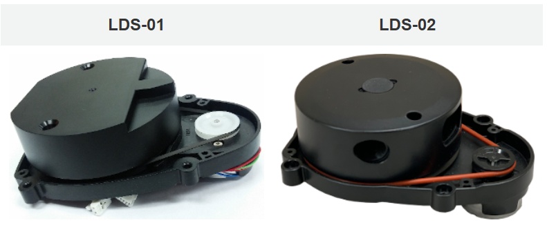

🔬 Lab5: Driving the Robot#
📌 Objectives#
Students should be able to
Lesson Objectives:#
Gain additional familiarity with simulation environment
Gain familiarity with Turtlebot 3 robotics platform
Practice with ROS diagnostic tools
Agenda:#
Use Linux terminals to launch and control Turtlebot 3 in simulation environment.
Use Linux terminals to launch and control actual Turtlebot 3.
📜 Overview#
This lab will introduce you to utilizing pre-built ROS packages to accomplish a task. It will also provide you experience interacting with someone else’s source code (.py files) to learn how that component works. You will use ROS to run two nodes, turtlebot3_core and teleop_twist_keyboard, to drive the Turtlebot3 with a keyboard. You will continue to practice using ROS tools to observe how these components communicate.
💻 Lab Procedure#
Working with a Remote Machine#
In this course, you’ll drive your TurtleBot without the need for a monitor and keyboard. However, you’ll still need access to the Raspberry Pi on the robot to run ROS nodes. One of the easiest ways to remotely access a Linux machine is through a secure shell (SSH). To create an SSH connection, you’ll need the username and hostname (or IP address) of the computer you want to access. For the Raspberry Pis, the username is pi and the hostname is your robot number (e.g., robot98).
Connect to the Robot’s Wi-Fi Network:
Click the system menu in the top-right corner to open the Wi-Fi Networks setting.
Choose
RobotXX, whereXXcorresponds to theXXinMasterXX.
Check Connectivity:
The Raspberry Pi on your robot acts as a Wi-Fi access point (AP), allowing communication with your master computer.
Open a terminal on your master computer.
Check connectivity to the robot using its IP address,
192.168.4.1:$ ping 192.168.4.1
Create a Secure Shell Connection: To access the robot remotely, create an SSH connection:
$ ssh pi@192.168.4.1
⌨️ Syntax:
ssh <username>@<hostname/IP address>Enter the Robot’s Password: After entering the robot’s password, the terminal should display the
piusername and your robot’s hostname,robotX. Any commands you run in this shell will execute on the robot.Change Your Password:
Once logged in, type the following command:
$ passwdYou will be prompted to enter your current password. Type it and press Enter.
Next, you will be asked to enter a new password. Type a password and press Enter.
Retype the new password to confirm and press Enter. If successful, you will see the message:
password updated successfully
To ensure that your new password works, you can open a new terminal and try logging in again:
$ ssh pi@192.168.4.1
Enter the new password when prompted.
Edit the
.bashrcFile:Open the
.bashrcfile by running the following command:$ nano ~/.bashrc
You should see the following lines at the bottom of the
.bashrcfile:source /opt/ros/humble/setup.bash source ~/robot_ws/install/setup.bash source /usr/share/colcon_cd/function/colcon_cd.sh export ROS_DOMAIN_ID=0 # For master0 and robot0 export _colcon_cd_root=/opt/ros/humble/ export TURTLEBOT3_MODEL=burger export LDS_MODEL=LDS-01 # Replace with LDS-02 if using new LIDAR source /usr/share/colcon_argcomplete/hook/colcon-argcomplete.bash
Your
ROS_DOMAIN_ID=XXshould match your computer ID, whereXXcorresponds to theXXinMasterXX.The robots for our class have two different LIDAR variants: LDS-01 and LDS-02 (pictured below).

If you have the LDS-02, update
export LDS_MODEL=LDS-01toexport LDS_MODEL=LDS-02inside the.bashrcfile.Save the changes and exit the editor.
Close the SSH Connection: You can type
exitto close the SSH connection.
{kind=link}
{kind=link}
Updating the Hosts File on Master#
As it is much easier to remember and use the host name than the IP address, let’s modify the hosts file so that the master computer recognizes the host name of the Raspberry Pi.
Warning
Ensure that you execute the commands in this section on the Master computer. Do not execute them on the Raspberry Pi.
Update the Hosts File on Master: To add the robot’s IP address to the hosts file, follow these steps on the
Mastercomputer:$ sudo gedit /etc/hosts
Add the following line to the file:
192.168.4.1 robotXX
Replace
robotXXwith your specific robot number.Save and Close the Hosts File: Save the changes and close the file by pressing
Ctrl+X, thenYto confirm, andEnterto exit.Check Connectivity: Check connectivity to the robot using its host name,
robotXX:$ ping robotXX
Create a Secure Shell Connection: To access the robot remotely, create an SSH connection:
$ ssh pi@robotXX
⌨️ Syntax:
ssh <username>@<hostname>Enter the Robot’s Password: After entering the robot’s password, the terminal should display the
piusername and your robot’s hostname,robotXX.
Setting Up Password-Free SSH Using RSA Keys#
Using password-free SSH authentication improves both security and convenience. Instead of manually entering a password each time, SSH keys provide a more secure and automated way to log in. This also makes remote access faster and more efficient.
Generate an SSH Key Pair on the Client: Open a terminal on the client machine and run the following command to generate an RSA key pair:
$ ssh-keygen -t rsa -b 4096
When prompted to enter a file to save the key, press Enter to accept the default location (
~/.ssh/id_rsa). If prompted for a passphrase, leave it empty (just press Enter) to enable password-free login.Copy the Public Key to the Remote Server: You need to transfer your public key to the server. Run the following command, replacing
usernameandhostnamewith your actual credentials:$ ssh-copy-id username@hostname
If prompted, enter your password for the remote machine. After this, the key will be added to the server’s authorized keys.
Test the Connection: Now, try logging into the remote machine without a password:
$ ssh username@hostname
If everything is set up correctly, you should log in without being prompted for a password.
Driving the Robot#
Using the secure shell, run the turtlebot3_core.launch file on the robot.
Tip
Take advantage of tab completion! Start typing a package name or node, then press Tab to auto-complete the command.
Note: The following command contains a deliberate typo to prevent copying and pasting. Be sure to type it out manually or use Tab for auto-completion.
$ ros2 launch turt1ebot3_bringup robot.launch
⌨️ Syntax:
ros2 launch <package> <launchfile>It will print something similar to:
[turtlebot3_ros-3] [INFO] [1738299487.825470539] [turtlebot3_node]: Succeeded to create battery state publisher [turtlebot3_ros-3] [INFO] [1738299487.829476168] [turtlebot3_node]: Succeeded to create imu publisher [turtlebot3_ros-3] [INFO] [1738299487.841928335] [turtlebot3_node]: Succeeded to create sensor state publisher [turtlebot3_ros-3] [INFO] [1738299487.844016446] [turtlebot3_node]: Succeeded to create joint state publisher [turtlebot3_ros-3] [INFO] [1738299487.844149094] [turtlebot3_node]: Add Devices [turtlebot3_ros-3] [INFO] [1738299487.844204353] [turtlebot3_node]: Succeeded to create motor power server [turtlebot3_ros-3] [INFO] [1738299487.849349150] [turtlebot3_node]: Succeeded to create reset server [turtlebot3_ros-3] [INFO] [1738299487.851512798] [turtlebot3_node]: Succeeded to create sound server [turtlebot3_ros-3] [INFO] [1738299487.853739761] [turtlebot3_node]: Run! [turtlebot3_ros-3] [INFO] [1738299487.890749557] [diff_drive_controller]: Init Odometry [turtlebot3_ros-3] [INFO] [1738299487.909780816] [diff_drive_controller]: Run!
We will learn more about launch files in a few modules, but just understand that a launch file is used to launch one or more ROS nodes.
Your Turtlebot3 is now ready to drive and should be listening for Twist messages to be sent over the /cmd_vel topic.
It is always a good idea to check that the Turtlebot3 is communicating with the Master. To do this, we can list the active topics the Turtlebot3 is publishing. Run the following within your Master:
$ ros2 topic 1ist
If all is well, it should display something similar to
/battery_state /cmd_vel /imu /joint_states /magnetic_field /odom /tf_staticOpen a new terminal on the Master and observe the nodes currently running:
$ rqt_graph`
You should see
/turtlebot3_nodesubscribing to the\cmd_veltopic and publishing multiple topics including\imu.Open a new terminal and run
$ ros2 node info /turtlebot3_node
You should be able to find the topics
/turtlebot3_nodeis publishing and subscribing to.We used the /cmd_vel topic when driving the simulated Turtlebot3, but let’s refresh our memory about the topic:
$ ros2 topic info /cmd_vel
We can find that topic utilizes the Twist message type. We can also verify this by
$ ros2 topic type /cmd_vel
The following will show information about the fields within the Twist message sent over the /cmd_vel topic:
$ ros2 interface show geometry_msg/msg/Twist
Run the teleop_keyboard node on the Master:
$ ros2 run turtlebot3_teleop te1eop_keyboard
Warning
If you run
ros2 run teleop_twist_keyboard teleop_twist_keyboard, the minimum linear x speed of thecmd_velpublished by theteleop_twist_keyboardnode is 0.5 m/s which is greater than the maximum speed of TurtleBot3 and so TurtleBot2 will ignore the topic.Before we get too excited and drive the Turtlebot3 off a cliff, observe how the nodes communicate using the rqt_graph tool in a new terminal (if you still have the previous rqt_graph running, you can hit the refresh button in the top left corner).
The Turtlebot3 operates best with a linear velocity between 0.1 m/s and 0.2 m/s. It turns best with an angular velocity between 0.5 rad/s and 1.5 rad/s. Drive the TurtleBot3 using these parameters.
ROS#
In labs throughout this course we will request information about the topics, nodes, and messages within your system. Accomplish the following in a new terminal on your Master.
List all running nodes.
Display running nodes and communication between them.
List the active topics.
Determine the type of messages sent over the topics (repeat for each topic).
Determine the fields of the messages.
Observe the information sent over a topic (repeat for each topic).
Checkpoint#
Once complete, push screenshots showing the output of each of the above to your student repo on github in a /master/module04 folder.
Summary#
In this exercise you examined and used pre-built packages and source code to drive the Turtlebot3 and understand how the system worked. You then were able to analyze the topics, nodes, and messages within the ROS system to better understand the flow of information and control. The pro-tips presented throughout this exercise will make you a better user of Linux and ROS.
Tip
I strongly recommend that you commit the above sequence of commands to memory, or at a minimum have them in a place that you can quickly recall them. There is nothing until Module 9 that absolutely requires the real robot, as everything else can be simulated.